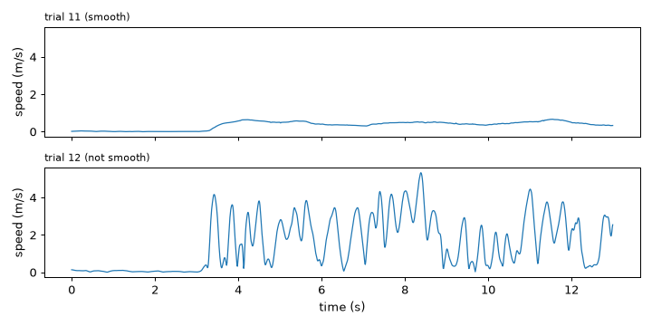
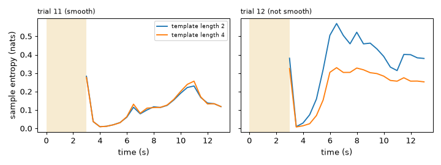
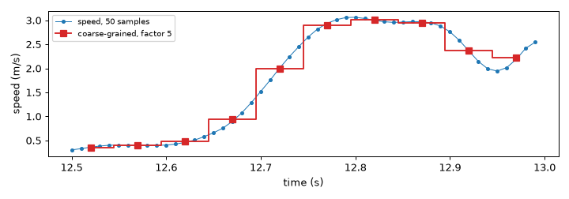
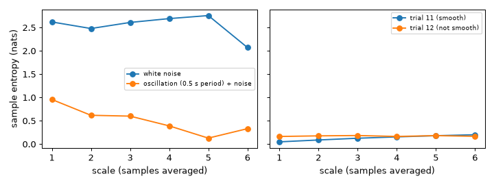
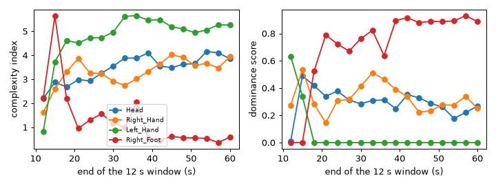
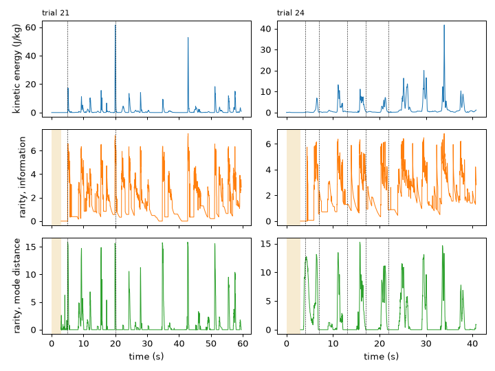
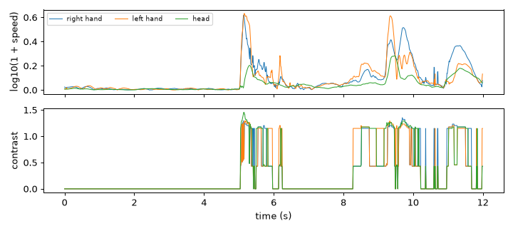
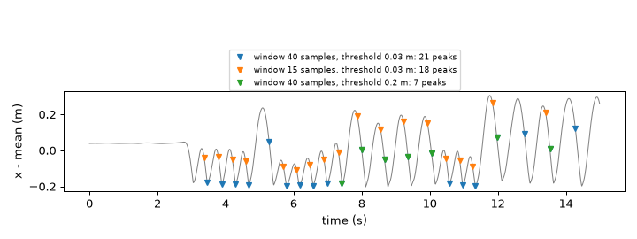
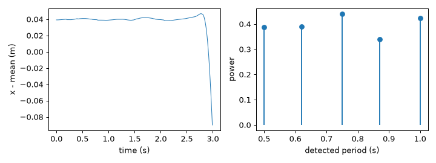

Note
Go to the end to download the full example code.
Analysis primitives: complexity, rarity, periodicity#
An analysis primitive does not care what its signal is: the speed of a hand, the kinetic energy of the body, a coordinate.
It answers one question about any series of numbers. This tutorial uses six of them: how irregular a signal is at one and
at several time scales (SampleEntropy, CoarseGraining, MultiScaleEntropy), who is the most regular of a group
(EnsembleDominance), how unusual the newest value is (Rarity), when a peak happens (ScalarPeakDetector) and
which period repeats (Periodicity).
- Goals:
measure the irregularity of a movement signal with sample entropy; see a signal at a coarser scale and measure its complexity across scales; compare the complexity of several signals to find the most regular one; flag unusual values with the two rarity methods; detect peaks online; find the period of a repeated movement.
- Prerequisites:
The contract every feature follows. Smoothness of movement is introduced in Low level: motion and smoothness; it is not required here.
- Data:
trials 7 (clapping), 11 and 12 (figure-eight, smooth and not smooth), 20 (balance lost), 21 (hiding an object on cue) and 24 (alternating light and heavy) of the example session, plus short synthetic signals.
- Time:
about 30 minutes.
What is an analysis primitive?#
Most features of the library are tied to a kind of data: a skeleton, a contour, a hand. The features of the analysis primitives layer take “one number (or a few numbers) per sample” and say something about its behaviour in time: how regular it is, how unusual the last value is, how often it repeats. The theory is in Entropy, rarity and periodicity and Dominance.
All of them count time in samples (windows, periods, scales); this tutorial converts to seconds with the sampling rate of the recording, 100 Hz. We start with the speed of the right hand in the figure-eight gesture, in metres per second, for the smooth execution (trial 11) and the not smooth one (trial 12). Time is in seconds.
import matplotlib.pyplot as plt
import numpy as np
from helpers import shade_status, speed
from pyeyesweb.datasets import load_qualisys_trial
smooth = load_qualisys_trial(11, start=1, stop=14).to_units("m")
rough = load_qualisys_trial(12, start=1, stop=14).to_units("m")
rate = smooth.sampling_rate
speeds = {
"trial 11 (smooth)": speed(smooth.joint("Right_Hand"), rate),
"trial 12 (not smooth)": speed(rough.joint("Right_Hand"), rate),
}
time = smooth.timestamps # the two recordings share their time axis
print(len(time), "samples at", rate, "Hz:", round(float(time[-1] - time[0]), 1), "s")
def ok_rows(recorder, name):
"""The rows of a variable-size output at the calls that produced a result, stacked into one array."""
return np.array([np.asarray(recorder[name][i], dtype=float) for i in np.flatnonzero(recorder.ok)])
fig, axes = plt.subplots(2, 1, figsize=(8, 4), sharex=True, sharey=True)
for ax, (name, values) in zip(axes, speeds.items()):
ax.plot(time, values, lw=1)
ax.set_ylabel("speed (m/s)")
ax.set_title(name, fontsize=9, loc="left")
axes[-1].set_xlabel("time (s)")
fig.tight_layout()

1300 samples at 100.0 Hz: 13.0 s
Takeaway. The primitives below all start from a series like these: one value per sample.
Sample entropy: how regular is the signal?#
SampleEntropy measures irregularity. Two stretches of the signal of k samples
match when all their samples differ by less than a tolerance; the entropy is large when stretches that match for k
samples rarely still match at the next one, that is when the signal is hard to predict. It returns one value for each
template length 1 to embedding_dimension, in nats. The tolerance is, by default, 0.2 times the standard deviation of
the window, so the numbers do not depend on the unit of the signal.
We use a window of 3 s (300 samples) that moves by 0.5 s (hop=50).
from pyeyesweb.analysis_primitives import SampleEntropy
entropy = {}
for name, values in speeds.items():
entropy[name] = SampleEntropy(window=300, hop=50, embedding_dimension=4).run(values, timestamps=time)
mean_entropy = ok_rows(entropy[name], "sample_entropy").mean(axis=0)
print(f"{name:<22} mean entropy for template lengths 1 to 4: {np.round(mean_entropy, 2)}")
fig, axes = plt.subplots(1, 2, figsize=(8, 3), sharey=True)
for ax, (name, recorder) in zip(axes, entropy.items()):
values = np.asarray(recorder.sample_entropy)
ax.plot(recorder.timestamps[recorder.ok], values[recorder.ok, 1], label="template length 2")
ax.plot(recorder.timestamps[recorder.ok], values[recorder.ok, 3], label="template length 4")
shade_status(ax, recorder.timestamps, recorder.status, codes=(1,))
ax.set_title(name, fontsize=9, loc="left")
ax.set_xlabel("time (s)")
axes[0].set_ylabel("sample entropy (nats)")
axes[0].legend(fontsize=7)
fig.tight_layout()

trial 11 (smooth) mean entropy for template lengths 1 to 4: [1.71 0.12 0.12 0.12]
trial 12 (not smooth) mean entropy for template lengths 1 to 4: [1.86 0.36 0.34 0.23]
The plot shows the entropy of the windows that end at each time; the yellow band is the warm-up, while the first window fills (see Results, statuses and recorders). The not smooth execution is the less predictable one, and its entropy is higher at every template length (see the printed means). Template length 1 compares single samples and is mostly a measure of the amplitude distribution; the longer templates are the usual “sample entropy”.
Takeaway. A larger sample entropy means a less predictable signal; the window must hold at least a few hundred samples.
Seeing a signal at a coarser scale#
A signal can be irregular only at its finest scale. CoarseGraining replaces each
group of factor consecutive samples by their mean, which is the same signal sampled factor times more slowly. It is
the first step of the multi-scale analysis. Here a window of 0.5 s (50 samples) is reduced with factor=5, to 10 values.
from pyeyesweb.analysis_primitives import CoarseGraining
values = speeds["trial 12 (not smooth)"]
coarse = CoarseGraining(window=50, factor=5).run(values, timestamps=time)
print("calls with a result:", int(coarse.ok.sum()), "of", len(coarse), "| status of the first calls:", coarse.status[:3], "...")
last = np.flatnonzero(coarse.ok)[-1]
window_time = time[last - 49:last + 1]
means = ok_rows(coarse, "coarse_grained")[-1, 0]
print("coarse series:", means.shape, "values; the same as the block means:", bool(np.allclose(means, values[last - 49:last + 1].reshape(10, 5).mean(axis=1))))
fig, ax = plt.subplots(figsize=(8, 2.8))
ax.plot(window_time, values[last - 49:last + 1], "o-", ms=3, lw=0.8, label="speed, 50 samples")
ax.step(window_time[2::5], means, "s-", where="mid", color="C3", label="coarse-grained, factor 5")
ax.set_xlabel("time (s)")
ax.set_ylabel("speed (m/s)")
ax.legend(fontsize=8)
fig.tight_layout()

calls with a result: 251 of 1300 | status of the first calls: [1 1 1] ...
coarse series: (10,) values; the same as the block means: True
The series is not recomputed on every window: after the first full window it comes every factor windows (here every
fifth sample), and the calls in between have the status NO_OUTPUT.
Takeaway. factor samples are averaged into one; a larger factor is a slower view of the same movement.
Multi-scale entropy and the complexity index#
MultiScaleEntropy computes the sample entropy of the signal coarse-grained at the
scales 1 to max_scale. White noise is unpredictable at the finest scale but, once averaged, loses its structure and the
entropy falls; a signal that stays irregular at the slower scales is complex. The complexity index is the area under
the entropy curve. The feature takes one value per signal and call, and several signals at once give one index each.
With the defaults (a window of 3000 samples) it needs 30 s of data; the examples here are shorter, so we lower
minimum_points, the number of samples that the coarsest scale must still have, to 100 (the estimate is coarser). A
synthetic pair makes the idea clear: noise against a regular oscillation with a little noise.
from pyeyesweb.analysis_primitives import MultiScaleEntropy
rng = np.random.default_rng(3)
samples = np.arange(1200)
synthetic = {
"white noise": rng.normal(size=1200),
"oscillation (0.5 s period) + noise": np.sin(2 * np.pi * samples / 50) + 0.1 * rng.normal(size=1200),
}
curves = {}
for name, signal in synthetic.items():
result = MultiScaleEntropy(window=1200, max_scale=6, minimum_points=100).run(signal)[-1]
curves[name] = result.scale_entropies[0]
print(f"{name:<36} complexity index {float(result.complexity_index[0]):.1f}")
for name, recording in (("trial 11 (smooth)", smooth), ("trial 12 (not smooth)", rough)):
result = MultiScaleEntropy(window=1300, max_scale=6, minimum_points=100).run(speeds[name])[-1]
curves[name] = result.scale_entropies[0]
print(f"{name:<36} complexity index {float(result.complexity_index[0]):.1f}")
fig, axes = plt.subplots(1, 2, figsize=(8, 3), sharey=True)
for ax, names in zip(axes, (list(synthetic), ["trial 11 (smooth)", "trial 12 (not smooth)"])):
for name in names:
ax.plot(np.arange(1, 7), curves[name], "o-", label=name)
ax.set_xlabel("scale (samples averaged)")
ax.legend(fontsize=7)
axes[0].set_ylabel("sample entropy (nats)")
fig.tight_layout()

white noise complexity index 12.9
oscillation (0.5 s period) + noise complexity index 2.4
trial 11 (smooth) complexity index 0.7
trial 12 (not smooth) complexity index 0.9
The noise keeps a high entropy at all scales and has a large index; the oscillation is predictable and has a small one. In the recordings the not smooth figure-eight has the larger index.
Takeaway. The complexity index summarises the entropy curve in one number: high for a signal that stays irregular at slower scales.
Who is the most regular? Dominance in a group#
In a group that moves together, the leader is, in the approach of Glowinski and colleagues, the participant with the least
complex movement: the most regular one is the anchor around which the others react.
EnsembleDominance takes the complexity index of each participant and returns a dominance
score between 0 and 1 for each (\(1 - \mathrm{CI}/\max \mathrm{CI}\)), the position of the leader and its index. See
Dominance.
We have a single person, so the “participants” here are four body parts of trial 20 (loss of balance on one leg): the
speeds of the head, both hands and the right foot. One MultiScaleEntropy handles the four signals, which guarantees
identical settings. The window is 12 s and moves by 3 s.
from pyeyesweb.high_level import EnsembleDominance
balance = load_qualisys_trial(20).to_units("m")
parts = ["Head", "Right_Hand", "Left_Hand", "Right_Foot"]
group = np.column_stack([speed(balance.joint(part), balance.sampling_rate) for part in parts])
complexity = MultiScaleEntropy(window=1200, hop=300, max_scale=6, minimum_points=100).run(group, timestamps=balance.timestamps)
indices = ok_rows(complexity, "complexity_index") # (windows, 4)
dominance = EnsembleDominance().run(indices)
scores = np.asarray(dominance.dominance_score, dtype=float)
leaders = np.asarray(dominance.leader_index, dtype=int)
window_end = complexity.timestamps[complexity.ok]
print("windows ending at", window_end.round(1), "s")
print("leader of each window:", [parts[i] for i in leaders])
fig, axes = plt.subplots(1, 2, figsize=(8, 3))
for column, part in enumerate(parts):
axes[0].plot(window_end, indices[:, column], "o-", label=part)
axes[1].plot(window_end, scores[:, column], "o-", label=part)
axes[0].set_ylabel("complexity index")
axes[1].set_ylabel("dominance score")
for ax in axes:
ax.set_xlabel("end of the 12 s window (s)")
axes[0].legend(fontsize=7)
fig.tight_layout()

windows ending at [12. 15. 18. 21. 24. 27. 30. 33. 36. 39. 42. 45. 48. 51. 54. 57. 60.] s
leader of each window: ['Left_Hand', 'Right_Hand', 'Right_Foot', 'Right_Foot', 'Right_Foot', 'Right_Foot', 'Right_Foot', 'Right_Foot', 'Right_Foot', 'Right_Foot', 'Right_Foot', 'Right_Foot', 'Right_Foot', 'Right_Foot', 'Right_Foot', 'Right_Foot', 'Right_Foot']
A score of 1 minus a ratio is relative to the group: the part with the lowest index has the highest score, the one with the highest index has 0. The same feature serves for the members of a quartet or of a dance group, one signal per person.
Takeaway. MultiScaleEntropy gives one complexity index per signal; EnsembleDominance turns the indices of a group
into scores and a leader.
Rarity: how unusual is the newest value?#
Rarity compares the newest value with what the signal did recently. It has two
methods, with different formulas and parameters:
method="information"(the default) sorts each value into bins whose widths you give withbins, and the rarity is large when the value falls in a bin that was little used in the lastwindowsamples;method="mode_distance"needs no bins: it compares the newest value with the most frequent value of the window and scales the result withalpha.
We apply both to the kinetic energy of the whole body (KineticEnergy, unit weights) in trial
21, where the performer hides an object behind the back on an unexpected cue, and in trial 24, which alternates light and
heavy movement. The energy spans several orders of magnitude, so the information method receives its logarithm with
bins of 0.1. The memory is 3 s (300 samples).
from pyeyesweb.analysis_primitives import Rarity
from pyeyesweb.low_level import KineticEnergy
cue_times = {21: [5, 20], 24: [4, 7, 13, 17, 22]} # times (s) listed in the data README, inside the trimmed recording
traces = {}
for number in (21, 24):
trial = load_qualisys_trial(number).to_units("m")
energy = KineticEnergy(skeleton=trial.skeleton, sampling_rate=rate).run(trial.positions, timestamps=trial.timestamps).kinetic_energy
log_energy = np.log10(1 + energy)
by_information = Rarity(number_of_inputs=1, window=300, bins=[0.1] * 20).run(log_energy[:, None], timestamps=trial.timestamps)
by_mode = Rarity(method="mode_distance", window=300, alpha=1.0).run(energy, timestamps=trial.timestamps)
traces[number] = (trial.timestamps, energy, by_information, by_mode)
print(f"trial {number}: statuses of the information method:", {int(s): int((by_information.status == s).sum()) for s in np.unique(by_information.status)})
fig, axes = plt.subplots(3, 2, figsize=(8, 6), sharex="col")
for column, (number, (stamps, energy, by_information, by_mode)) in enumerate(traces.items()):
axes[0, column].plot(stamps, energy, lw=0.8)
axes[1, column].plot(stamps[by_information.ok], np.asarray(by_information.rarity)[by_information.ok, 0], lw=0.8, color="C1")
axes[2, column].plot(stamps[by_mode.ok], np.asarray(by_mode.rarity)[by_mode.ok], lw=0.8, color="C2")
shade_status(axes[1, column], stamps, by_information.status, codes=(1,))
shade_status(axes[2, column], stamps, by_mode.status, codes=(1,))
for ax in axes[:, column]:
for cue in cue_times[number]:
ax.axvline(cue, color="k", ls=":", lw=0.8)
axes[0, column].set_title(f"trial {number}", fontsize=9, loc="left")
axes[2, column].set_xlabel("time (s)")
axes[0, 0].set_ylabel("kinetic energy (J/kg)")
axes[1, 0].set_ylabel("rarity, information")
axes[2, 0].set_ylabel("rarity, mode distance")
fig.tight_layout()

trial 21: statuses of the information method: {0: 5655, 1: 299}
trial 24: statuses of the information method: {0: 3785, 1: 299}
Both methods rise at bursts of energy that differ from the last seconds and decay as the memory adapts. The dotted lines are the cue times of trial 21 (the first two of the README list that fall inside the trimmed recording) and the “light” moments of trial 24. Rarity says that something unusual happened, not what it was: it is a detector of surprise.
The information method also has a measure="contrast" mode that compares several signals with each other at each
sample: the rarity of an input is large when it sits in a bin that the other inputs do not use. Here three body parts of
trial 21, in the same bins.
contrast_trial = load_qualisys_trial(21, start=0, stop=12).to_units("m")
inputs = np.column_stack([np.log10(1 + speed(contrast_trial.joint(part), rate)) for part in ("Right_Hand", "Left_Hand", "Head")])
contrast = Rarity(number_of_inputs=3, measure="contrast", bins=[0.1] * 20).run(inputs, timestamps=contrast_trial.timestamps)
print("contrast output:", np.asarray(contrast.rarity).shape, "= one value per input and sample")
fig, axes = plt.subplots(2, 1, figsize=(8, 3.6), sharex=True)
axes[0].plot(contrast_trial.timestamps, inputs, lw=0.8)
axes[0].set_ylabel("log10(1 + speed)")
axes[0].legend(["right hand", "left hand", "head"], fontsize=7, ncol=3)
axes[1].plot(contrast_trial.timestamps, np.asarray(contrast.rarity), lw=0.8)
axes[1].set_ylabel("contrast")
axes[1].set_xlabel("time (s)")
fig.tight_layout()

contrast output: (1200, 3) = one value per input and sample
Takeaway. Rarity flags values that the recent past makes unusual; information needs bin widths in the units of the
signal, mode_distance does not.
Peaks: when does a movement burst happen?#
ScalarPeakDetector turns a continuous signal into events. It keeps the last
window samples and flags a peak (is_peak) when the buffer shows a fall after a rise, both larger than threshold (a swing, in the units
of the signal, not a level). Only maxima are reported, and a peak comes after the maximum, once the fall is in the buffer.
On the horizontal position of the right hand in trial 7 (clapping hands), in metres around its mean, a threshold of 3 cm and a buffer of 0.4 s mark the maxima of the swings.
from pyeyesweb.analysis_primitives import ScalarPeakDetector
clap = load_qualisys_trial(7, start=2, stop=17).to_units("m")
position = clap.joint("Right_Hand")[:, 0]
position = position - position.mean()
fig, ax = plt.subplots(figsize=(8, 3))
ax.plot(clap.timestamps, position, color="0.5", lw=0.8)
for (length, threshold), color in (((40, 0.03), "C0"), ((15, 0.03), "C1"), ((40, 0.2), "C2")):
peaks = ScalarPeakDetector(window=length, threshold=threshold).run(position, timestamps=clap.timestamps)
index = np.flatnonzero(peaks.is_peak)
ax.plot(clap.timestamps[index], position[index], "v", color=color, ms=5,
label=f"window {length} samples, threshold {threshold} m: {len(index)} peaks")
ax.set_xlabel("time (s)")
ax.set_ylabel("x - mean (m)")
ax.legend(fontsize=7, loc="upper center", ncol=1, bbox_to_anchor=(0.5, 1.45))
fig.tight_layout()

The markers come after the maximum, once the buffer holds the fall that follows it (a delay of up to the buffer length), and the minima are not marked. A larger threshold keeps only the large swings (the green markers); both parameters have to
suit the amplitude and the rhythm of the signal. The is_peak train is what other features take as events (see
Synchronization of events, and
BinaryPulsesRegularity in Physical signals: images for the
regularity of a pulse train).
Takeaway. Choose threshold in the units of your signal and window as long as the swings you want to detect.
Periodicity: which period repeats?#
Periodicity finds the periods, in samples, at which a window repeats, with the
periodicity transform, and a power between 0 and 1 for each (1 for a perfectly periodic signal). method="mbest" returns
the best_periods strongest; method="small2large" searches from the smallest period upward. A window should hold
several repetitions. First a signal with a known answer: a sine of period 80 samples with noise.
from pyeyesweb.analysis_primitives import Periodicity
known = np.sin(2 * np.pi * np.arange(800) / 80) + 0.2 * np.random.default_rng(0).normal(size=800)
for method in ("mbest", "small2large"):
found = Periodicity(window=800, method=method, best_periods=3, sort_by_power=True).run(known)[-1]
print(f"synthetic sine, period 80 samples, {method:<11}: periods {found.periods[0][:3]}, powers {found.powers[0][:3].round(2)}")
synthetic sine, period 80 samples, mbest : periods [ 80. 266. 240.], powers [0.97 0.14 0.12]
synthetic sine, period 80 samples, small2large: periods [ 77. 81. 149.], powers [0.32 0.22 0.21]
Now the clapping hand (trial 7), in a window of 3 s that holds about four claps. The period is also read from the autocorrelation of the whole 15 s recording, as an independent reading, and the powers of the detected periods are drawn.
window = position[:300]
detected = Periodicity(window=300, method="mbest", best_periods=5, sort_by_power=True).run(window)[-1]
whole = position - position.mean()
autocorrelation = np.correlate(whole, whole, "full")[len(whole) - 1:]
autocorrelation /= autocorrelation[0]
first_peak = next(i for i in range(30, len(whole) - 1) if autocorrelation[i] > autocorrelation[i - 1] >= 0 and autocorrelation[i] >= autocorrelation[i + 1])
print(f"strongest period: {detected.periods[0, 0]:.0f} samples = {detected.periods[0, 0] / rate:.2f} s | autocorrelation peak: {first_peak} samples")
fig, axes = plt.subplots(1, 2, figsize=(8, 3))
axes[0].plot(clap.timestamps[:300], window, lw=0.8)
axes[0].set_xlabel("time (s)")
axes[0].set_ylabel("x - mean (m)")
axes[1].stem(detected.periods[0] / rate, detected.powers[0], basefmt=" ")
axes[1].set_xlabel("detected period (s)")
axes[1].set_ylabel("power")
fig.tight_layout()

strongest period: 75 samples = 0.75 s | autocorrelation peak: 75 samples
The strongest period is the interval between two claps. The other candidates are multiples or neighbours of it, with lower power: read the power as the strength of the repetition at that period, and look for the smallest period with a high power.
Takeaway. periods are in samples (divide by the sampling rate for seconds) and powers say how strongly the window
repeats at each.
Try it#
SampleEntropyhas arelative_tolerance(0.2 by default). Repeat the entropy of trials 11 and 12 with 0.1 and 0.4 for template length 2. Does the not smooth trial stay the more irregular one?Count the peaks of the clapping hand with
window=40and thresholds of 0.03, 0.1, 0.2 and 0.3 m. How many remain?alphascales themode_distancerarity. Run it withalpha=1andalpha=2on the energy of trial 21 and compare the largest value of each.
Solutions#
Exercise 1. The tolerance changes the numbers but, here, not the order of the two trials.
for tolerance in (0.1, 0.4):
means = {}
for name, values in speeds.items():
recorder = SampleEntropy(window=300, hop=50, embedding_dimension=2, relative_tolerance=tolerance).run(values)
means[name] = ok_rows(recorder, "sample_entropy")[:, 1].mean()
print(f"relative tolerance {tolerance}:", {name: round(float(value), 2) for name, value in means.items()})
relative tolerance 0.1: {'trial 11 (smooth)': 0.25, 'trial 12 (not smooth)': 0.68}
relative tolerance 0.4: {'trial 11 (smooth)': 0.06, 'trial 12 (not smooth)': 0.17}
Exercise 2. The peaks of the small swings disappear first, then all of them once the threshold exceeds the swing.
threshold 0.03 m: 21 peaks
threshold 0.1 m: 21 peaks
threshold 0.2 m: 7 peaks
threshold 0.3 m: 0 peaks
Exercise 3. The score is proportional to alpha.
largest rarity for alpha 1 and 2: [15.84 31.68] | ratio 2.0
Next steps#
Entropy, rarity and periodicity and Dominance: the definitions, parameters and practical notes.
Analysis primitives and Layer 4: qualities communicated: every parameter of the features used here.
Synchronization of continuous signals: the same kind of series, now compared between two body parts or two people.
Total running time of the script: (0 minutes 5.997 seconds)